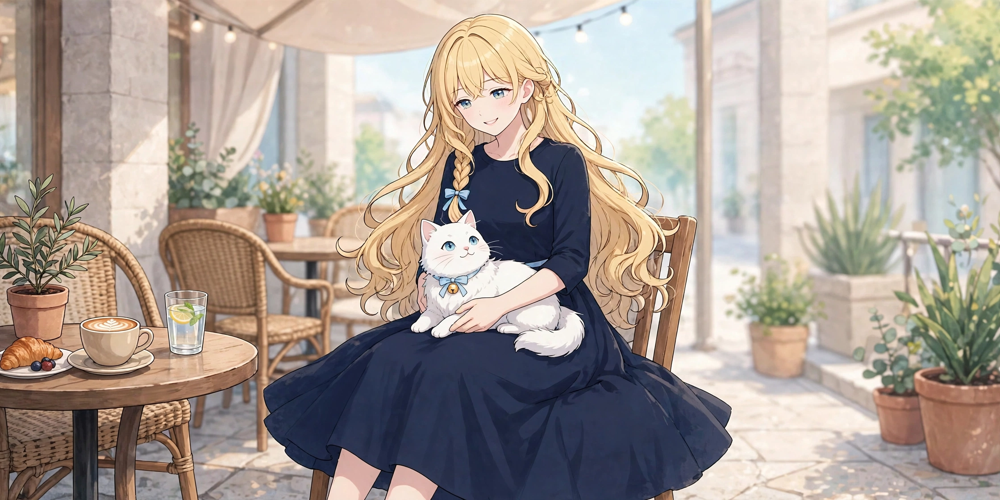

WOMEN — FASHION FEATURENo.1
ぽっこりお腹カバー ワンピースの選び方（40代）
TEXT — 222工房（セラピスト／パーソナルトレーナー） GUIDE — セラフィナ＆ルミ

セラフィナ：先に結論です。お腹を隠そうとして全体を大きくすると、かえって大きく見えます。選ぶ目安は「切り替えはウエストより少し上」「落ちるAライン」「中くらいの厚みの生地」の3つだけ。この記事の商品は、この3つに合うものだけを先に並べます。
この記事の商品（先に比較）
| 商品 | 価格（税込） | お店 |
|---|---|---|
| ラフなのに、後ろ姿まで美しい。ワンピース レディース ロング丈 長袖 | 7,990円 | antiqua（アンティカ） |
| [antiqua] Aライン ロング シャツワンピース レディース | 7,990円 | antiqua |
| [antiqua] ドット柄 Aライン シャツワンピース UK-00 | 11,990円 | antiqua |
| [antiqua] 幾何学柄 スタンドネック ワンピース PA-03 | 8,990円 | antiqua |
| Vネックロングワンピース レディース ワンピース | 4,053円 | Doux Belle |
| Vネックノースリーブロングワンピース レディース ワンピース | 3,844円 | Doux Belle |
| フリル襟花柄ワンピース レディース ワンピース | 4,471円 | Doux Belle |
| 長袖Aラインワンピース | 1,980円 | Amulet |
| コーデュロイウエストギャザーワンピース レディース ワンピース | 4,933円 | Doux Belle |
| チェック柄ノースリーブワンピース レディース ワンピース | 4,283円 | Doux Belle |
| フレアロング丈結婚式ワンピース | 4,830円 | DRESS+ |
| ウエストリボンアシメ切替ギャザーフレアワンピース レディース ワンピ | 5,193円 | Doux Belle |
価格は確認時点のものです。詳しい見方は下の選び方3点へ。
目安1：切り替えはウエストより少し上
お腹の一番出ている位置で切り替わると、そこに視線が集まります。切り替え（縫い目やベルト位置）がウエストより少し上にあると、お腹のふくらみが目立ちにくくなります。
目安2：広がりは「落ちる」Aライン
横に張るAラインより、肩からすとんと落ちて裾で少し広がる形がすっきり見えます。生地は薄すぎると体のラインを拾い、厚すぎると膨らむので、中くらいの厚みで落ち感のあるものを選んでください。
目安3：姿勢で印象が変わる
猫背になると、お腹が前に出て見えます。出かける前に壁に背中をつけて立つ姿勢チェック（1分）をすると、同じワンピースでも印象が変わります。二人でやる方法はペア姿勢チェックの記事にまとめました。
あえて推さないもの
- お腹の位置で切り替わるもの（視線が集まります）
- 光沢の強い薄い生地（体のラインを拾いやすい）
- サイズを上げすぎて肩が落ちるもの（肩が合っていないと全体が大きく見えます）
逆に言うと、この3つを外せば大きく失敗しません。
SHOPPING今回のアイテム
この記事の目安に合う商品
特徴：切り替えが上めで、落ち感のあるAライン中心に選びました。価格帯は2,000円台から1万円台まであります。
PR：この記事のテーマに合うワンピース（PR）

![[antiqua] Aライン ロング シャツワンピース](https://tshop.r10s.jp/stylife/cabinet/item/989/sk1989-03_1.jpg?fitin=600%3A720&composite-to=center%2Ccenter%7C600%3A720)
![[antiqua] ドット柄 Aライン シャツワンピース](https://tshop.r10s.jp/stylife/cabinet/item/319/sv1319-01_1.jpg?fitin=600%3A720&composite-to=center%2Ccenter%7C600%3A720)
![[antiqua] 幾何学柄 スタンドネック ワンピース](https://tshop.r10s.jp/stylife/cabinet/item/439/sm0439-01_1.jpg?fitin=600%3A720&composite-to=center%2Ccenter%7C600%3A720)


あわせて読みたい：ワンピース種類別ガイド／ぽっこりお腹のドローイン／ペアストレッチ
NEXT — 次に読む二の腕カバー トップスの選び方（40代）